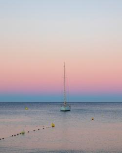
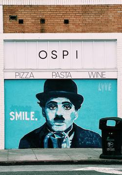
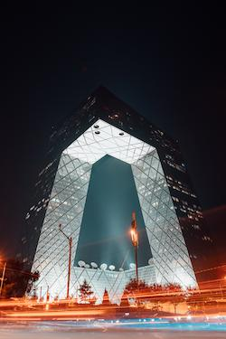
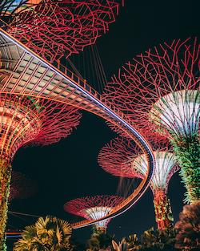
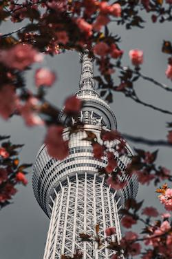

Это было самое начало пути. На этом этапе важно было проникнуться
основами и настроиться на учёбу. И, возможно, подумать, как новые
знания могут повлиять на ваше будущее.
Очень хотелось быстрее начать изучать новое.
1 спринт: Я — чистый лист
<clean>

На первых этапах мы работали со страхами и сомнениями, которые часто
испытывают новички. Один из них — страх перед чистым листом. Это,
конечно же, намного сложнее, чем боязнь куска бумаги. Часто за этим
ощущением скрываются более глубокие вопросы: с чего начать? а вдруг
будет слишком сложно? что, если я не справлюсь?
Старах чистого листа, непонимание с чего и как начать...
1 спринт: А если не получится?
<COOL>

Первый проект — позади! Но это всё ещё самое начало пути. Радость
могла быстро померкнуть и смениться ожиданием провала. Или вы,
наоборот, могли вдохновиться успехами и поверить в себя.
Все получилось и это круто, интересно и захватывающе.
2 спринт: Погоня за идеалом
<desigions>

На этом этапе вы уже достаточно разбирались в основах вёрстки, чтобы
понять, как много ещё впереди. Вы могли попытаться погнаться за
идеалом и понять, что он недостижим. А, может, вы вовсе и не
подвержены перфекционизму и вместо того, чтобы сделать идеально,
старались просто сделать.
Время когда освоил ещё так мало, но уже умеешь так много.
2 спринт: О тех, кто рядом
care

Всё это время вы были не одиноки (хотя, возможно, иногда и
чувствовали, что одни против целого мира). Вас окружали
одногруппники, команда сопровождения и просто близкие люди, которым
можно пожаловаться, если очередной макет просто так не поддавался.
Осваивать что-то новое легче, когда рядом есть единомышленники, не
правда ли?
Когда ты не один - даже самое сложное кажется выполнимым!
3 спринт: Обходные стратегии
<support>
На этом курсе вы постоянно решали разные задачи. В какой-то момент
вам могло показаться, что решения просто иссякли. Значит, пришло
время посмотреть на задачу под другим углом.
Когда ничего не получается - время рефлексии и отдыха!
3 спринт: Когда опускаются руки
<reflection>

Во время учёбы часто возникает чувство, когда не знаешь, за что
хвататься. Вроде и проектную пора сдавать, и задачи хочется
порешать, и в теории получше разобраться, и жизнь не забыть пожить.
В такие моменты очень нужна концентрация. Вспомните, откуда вы её
черпали.
Вдохновение приходит когда есть цель.
«Сейчас я здесь»
<experience>
Сейчас вы уже очень много знаете о вёрстке. Но это только начало.
Во-первых, впереди ещё много материала про «красотищу». Во-вторых, с
окончанием курса учёба не заканчивается. Вёрстка — это целый мир. И
этот мир постоянно меняется. Познать его полностью не получится, но
это тот случай, когда важен сам процесс познания. Ведь часто путь —
и есть результат.
Впереди еще так много материала для изучения, и кажется что этого
всего никогда не освоить.